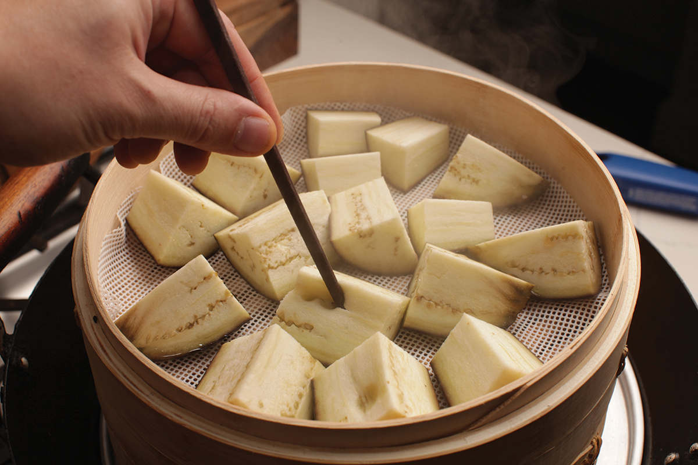
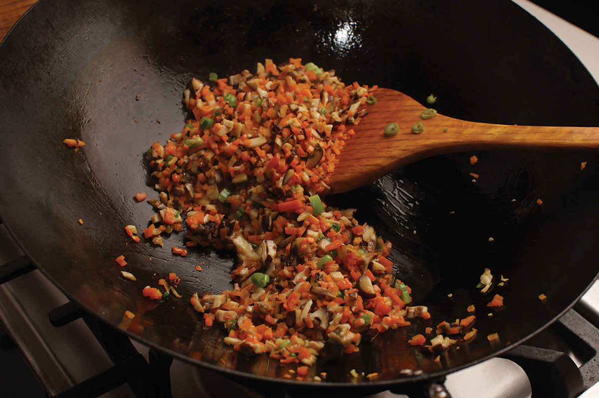
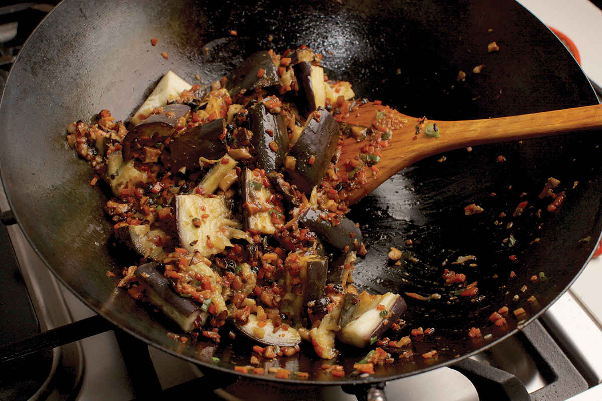
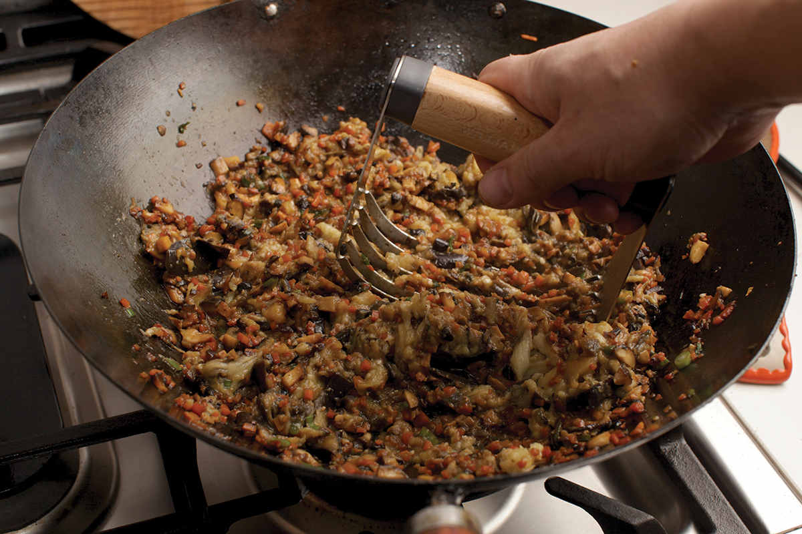

VEGETARIAN EGGPLANT, MUSHROOM, AND CARROT FILLING FOR DUMPLINGS
|
Yield Makes enough for 60 to 80 dumplings |
Active Time 20 minutes Total Time 20 minutes, plus time to cool |
To form and cook dumplings, see here.
If you don’t use up all the filling, extra can be placed in a zipper-lock freezer bag with the air squeezed out, pressed flat, and frozen for future use.
INGREDIENTS
1 pound (450 g/about 2 medium) Japanese or Chinese eggplant, stems removed, cut into 2-inch chunks
2 tablespoons (30 ml) peanut, rice bran, or other neutral oil
4 ounces (120 g/about 1 small) carrot, peeled and grated on the large holes of a box grater or very finely diced by hand
4 ounces (120 g/about 12 medium) shiitake mushrooms, stems removed, caps minced
2 teaspoons (5 g) minced garlic (about 2 medium cloves)
2 teaspoons (5 g) minced fresh ginger (about ½-inch segment)
2 scallions, minced
1 tablespoon (15 ml) Shaoxing wine
1 tablespoon (15 ml) light soy sauce or shoyu
1 teaspoon (5 ml) dark soy sauce
1 tablespoon (15 ml) red, brown, or yellow miso paste
2 teaspoons (about 4 g) dried fermented black beans (douchi), roughly chopped
Salt and freshly ground white pepper
One of the issues I have with common vegetarian dumpling fillings is their texture. Meat is made of muscle cells, and muscle cells are particularly good at forming strong, elastic networks. This is a physiological thing. Our muscles need to be able to contract and change shape without breaking, bursting, or tearing. Plant cells, on the other hand, are rigid in structure, designed to hold their shape rather than bend or pull. This is why meat-based dumpling fillings tend to have a denser, more coherent texture even without the wrapper, while vegetable-based fillings often feel like a collection of bits and pieces held together by the dumpling skin alone. This also makes many vegetable-based fillings difficult to work with, as they have a tendency to fall out of wrappers as you try to wrap them.
Enter eggplant. If you’ve read my book The Food Lab, you’ll know that I use eggplant to improve the texture and moisture-retaining capabilities of ground turkey in my turkey burgers. The same characteristics—eggplant’s ability to retain moisture and fat, as well as its dense texture and ability to soak up flavors—make it a wonderful choice for a dumpling filling.
I start by steaming cut eggplant to tenderize it, then stir-fry it with carrot and shiitake mushroom, along with garlic, ginger, a dash of miso paste, and some fermented black beans. The filling is dense, umami-packed, and very satisfying, and it behaves very similarly to meat-based fillings, making it quite easy to work with.
DIRECTIONS
1 Bring a couple inches of water to a boil in your wok. Arrange the eggplant pieces in a single layer in a bamboo steamer insert (stack 2 steamers if necessary), cover, and steam until the eggplant is completely tender, about 10 minutes. Set aside.
2 Empty the wok and heat over high heat until lightly smoking. Add the oil and swirl to coat. Add the carrot, mushrooms, garlic, ginger and scallions and stir-fry until the mushrooms and carrots are lightly softened, about 2 minutes. Add the wine, soy sauces, miso paste, and fermented black beans and stir-fry until the miso paste is fully incorporated, about 1 minute.
3 Add the eggplant, reduce the heat to medium-low, and cook, stirring and mashing with a whisk, potato masher, or pastry cutter, until the eggplant is completely broken down and the mixture is thickened, about 2 minutes. Season with salt and white pepper to taste. Transfer the mixture to a rimmed baking sheet or a large plate and spread into an even layer. Refrigerate until completely cooled before using.



